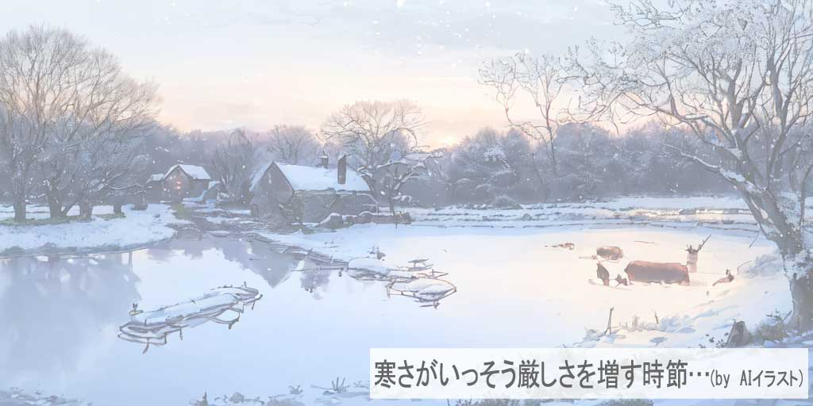
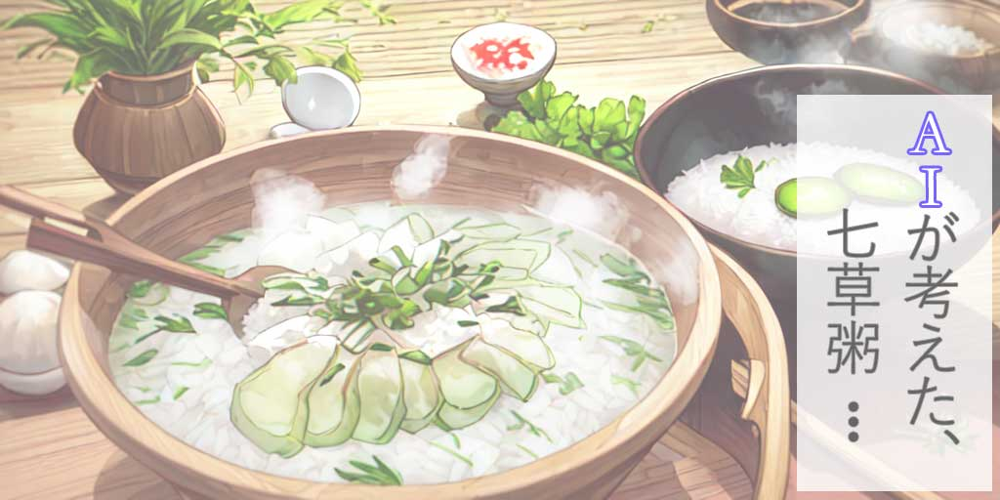
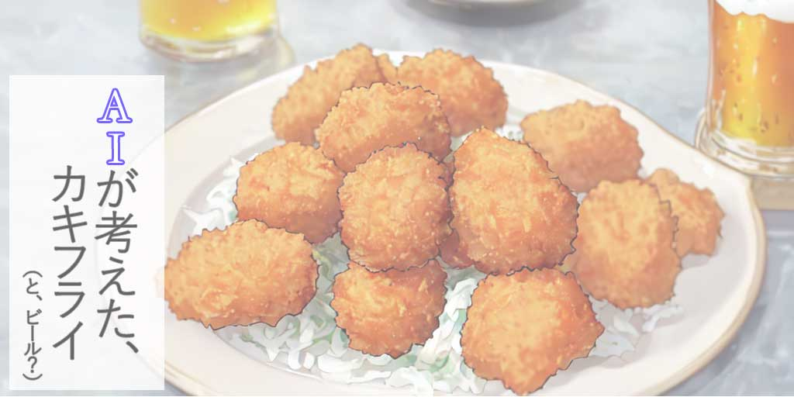
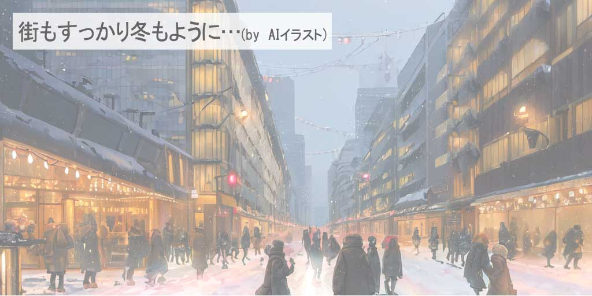
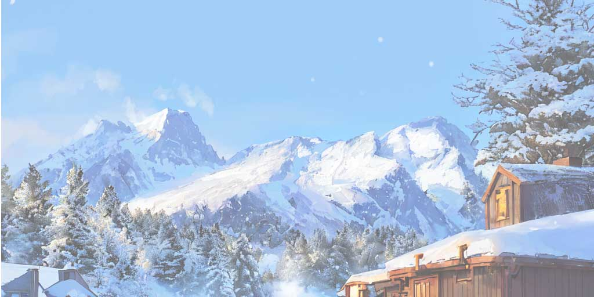

二十四節気の『小寒（しょうかん）』とは：冬の寒さが本格的に深まる季節 - おいしい旬の食べ物や健康への影響、そして小寒の伝統と意義
小寒（しょうかん）の到来: 冬の深まりを感じる時期

冬の寒さがいよいよ本格化する「小寒（しょうかん）」。この節気は、一年の中でも特に寒い時期を迎え、冬の魅力と厳しさが同時に感じられる独特な時期です。この記事では、小寒の歴史的背景、自然界における変化、そして現代におけるこの節気の意味と楽しみ方について探ります。小寒がもたらす冬の深みを通じて、季節の美しさとその中での暮らし方について一緒に考えましょう。
小寒（しょうかん）の意味と歴史: 季節の変わり目を感じる
小寒は、寒さがいっそう厳しさを増す一年のうちでも特に冷え込む時期を指し、日本の伝統的な二十四節気の一つです。この時期は、古来より自然界の変化を細かく観察することで、農業や生活のリズムを調整してきました。特に、冬の終わりに近づき、春の訪れを予感させる大切な時期とされています。
小寒の期間は、冷たい風と共に、自然界では動植物が冬の厳しさに適応する様子が観察できます。木々はさらに葉を落とし、動物たちは冬眠を深めます。また、この時期には、寒さに強い特定の野菜や魚介類が旬を迎えることも特徴的です。
小寒は、日本においても古くから重要視されてきた節気で、季節の変化を敏感に感じ取り、それに合わせて生活を送ることの重要性を教えてくれます。今日でも、小寒の訪れは、新たな年の始まりに向けての準備としての意味を持ち、自然のリズムに寄り添った生活を思い起こさせる機会となっています。
小寒（しょうかん）の食べ物とレシピ: 2024年冬の味覚を楽しむ
小寒の季節は、寒さが厳しくなるにつれ、身体を温める食材が注目されます。この時期には、根菜類や冬野菜が旬を迎え、厳しい寒さに耐えうる栄養価の高い料理が多く見られます。代表的な食材には、大根、ごぼう、白菜などがあり、これらは煮物や鍋料理に最適です。
小寒には、伝統的に「七草粥」を食べる習慣があります。これは、春の七草を用いたお粥で、新年の健康を祈り、胃腸を休める意味があります。また、小寒は寒さで締まった魚の美味しさも際立ちます。特に、寒ブリやカキなどは、この時期が最も美味しいとされ、様々な料理で楽しむことができます。
家庭で簡単に作れる小寒のレシピとしては、大根と鶏肉の煮物や、根菜類を使った温かいサラダがおすすめです。これらの料理は、寒い季節に身体を内側から温め、栄養をしっかり摂ることができます。また、寒ブリのしゃぶしゃぶやカキフライは、家族や友人との食卓を豊かに彩るメニューとして最適です。
小寒（しょうかん）と健康: 冬の寒さに立ち向かうウェルネスの秘訣
小寒の節気は、年間で最も寒さが厳しくなる時期です。この時期には、身体を適切にケアすることが重要になります。小寒の季節は、特に免疫力を高め、冷え性や風邪を防ぐための健康管理が欠かせません。
冬の健康を保つための秘訣の一つは、栄養豊富な食事です。旬の根菜類や冬野菜はビタミンやミネラルが豊富で、身体を内側から温める効果があります。また、適量の良質なタンパク質を含む食品を摂取することも大切です。例えば、寒ブリやカキなどの魚介類は、この時期にぴったりの食材です。
さらに、寒い季節には適度な運動を心掛けることが重要です。屋内での軽いストレッチやヨガ、または散歩などは、血行を促進し、免疫力を維持するのに役立ちます。冷たい空気は体を冷やすので、適切な防寒対策をしながら運動することが推奨されます。
また、冬の季節は心の健康にも注意を払うことが大切です。短い日照時間と長い夜は、心理的な影響を及ぼすことがあるため、リラクゼーションやストレス軽減のための活動を取り入れると良いでしょう。瞑想、読書、趣味の時間など、心を穏やかに保つ活動を日常生活に組み込むことが、冬のウェルネスには効果的です。
おみくじタイムをどうぞ。
あなたの今日の運勢は何％かな？？
現代における小寒（しょうかん）の価値と意義
小寒の節気は、現代社会においても、自然界との繋がりを思い起こさせる大切な時期です。この時期には、年の始まりを感じ、新たな決意を固める機会が提供されます。現代の忙しい日常生活の中で、小寒は私たちに自然のリズムに耳を傾け、季節の変化を意識する機会を与えます。
小寒の期間は、寒さが最も厳しくなる時であり、これは私たちに自己ケアの重要性を再認識させます。身体を温かく保ち、栄養バランスの取れた食事を心掛けること、また、冬の寒さに対応するための適切な生活習慣を取り入れることが求められます。
また、小寒は家族やコミュニティとの結束を深める機会としても重要です。寒い時期には、家族や友人と室内で過ごす時間が増え、お互いの絆を深める機会が多くなります。この時期に行われる伝統的な食事や行事は、文化的なつながりを再確認し、人々の心を暖かくします。
小寒（しょうかん）2024: 伝統と現代が交差する、小寒の風習とその意義
小寒は、冬の寒さが最も厳しくなる時期であり、古来より多くの伝統的な風習があります。これらの風習は、寒さに対抗し、家族やコミュニティの絆を強化するための方法として発展してきました。しかし、2024年の小寒は、これらの伝統に現代的な解釈を加えることで、新たな意味を見出すことができます。
一例として、小寒に食べられる伝統的な食材、例えば大根やカブなどは、健康維持に役立つ食材として再評価されています。これらの食材は、寒い時期に体を温め、免疫力を高める効果があるとされ、現代の食生活においても重要な役割を果たしています。
また、小寒の時期に行われる家族や地域の集まりは、現代の忙しい生活の中で、人々が交流し、コミュニティの絆を深める機会となっています。これらの集まりは、古くからの風習を守るだけでなく、現代社会における人々のつながりを再確認する場としても重要な役割を果たしています。
小寒（しょうかん）の深い魅力: まとめと展望
この記事を通じて、小寒が持つ多面的な魅力を探りました。古くからの伝統的な風習から、現代の健康とウェルネスへの影響まで、小寒は私たちの生活に深く根差した節気です。季節の変わり目に自分の健康に意識を向けることで、寒い季節を健やかに過ごすための、あなたのヒントになれば幸いです。2024年の小寒も、私たちにとって特別な意味を持ち続けることでしょう。伝統と現代が交差するこの時期は、自然のサイクルを尊重しながら、心身の健康を見直し、新たな年への準備をする絶好の機会です。冬の真ん中とも言える小寒の一日を、どうぞ豊かにお過ごしください。